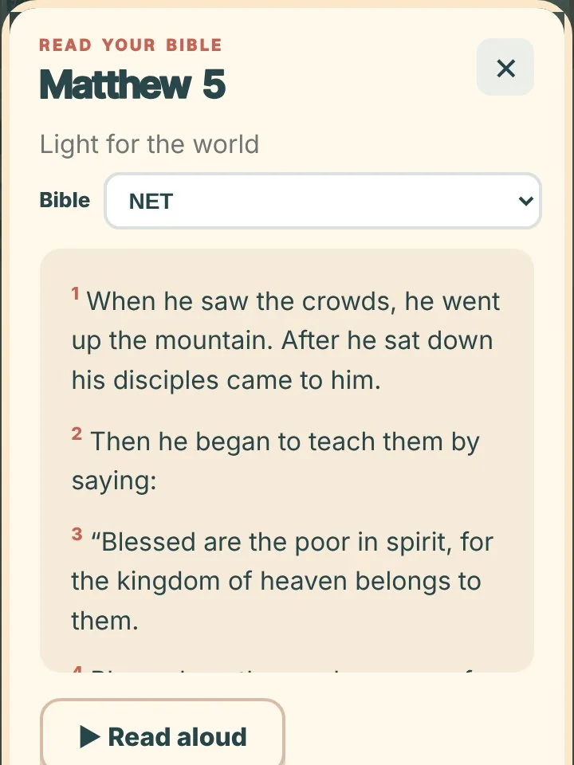
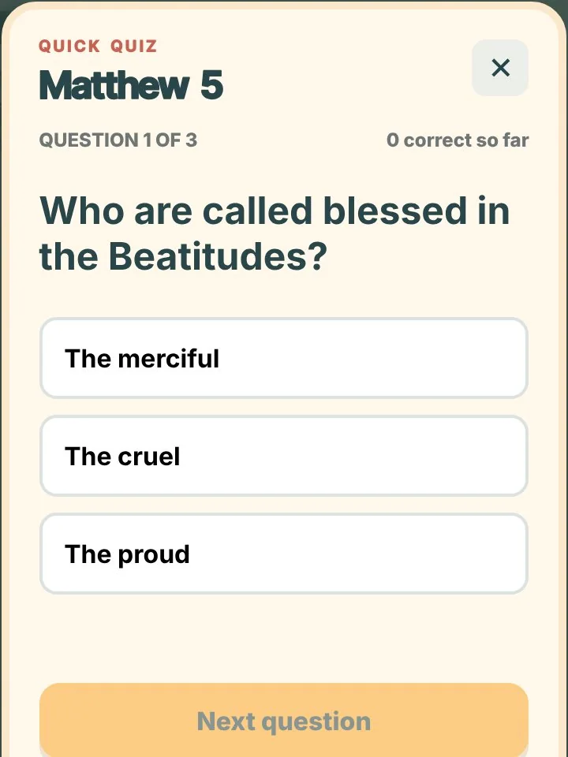
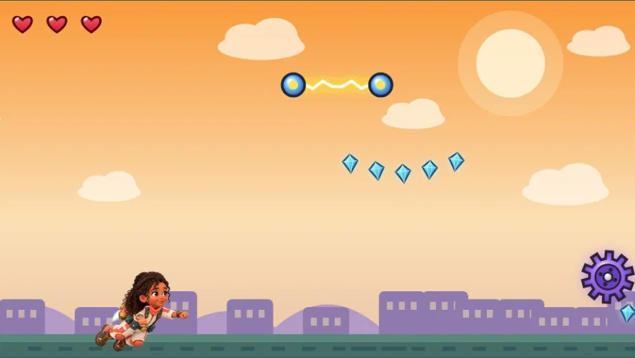
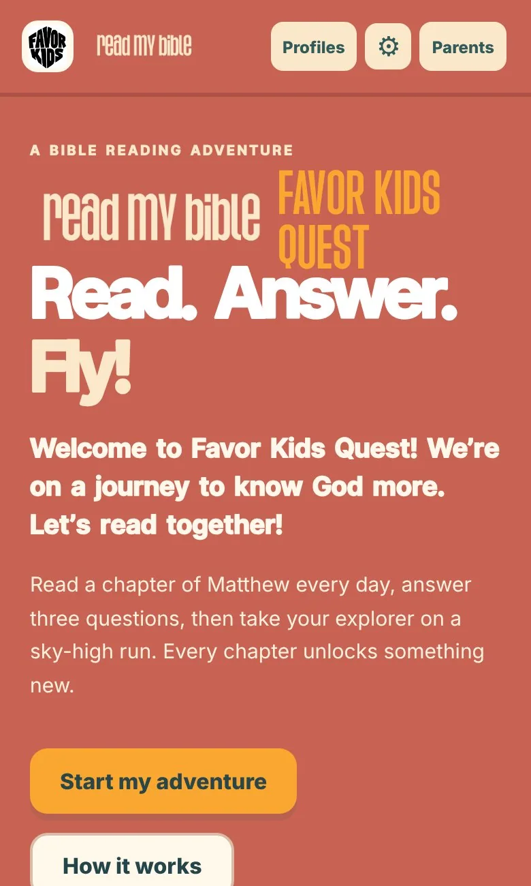
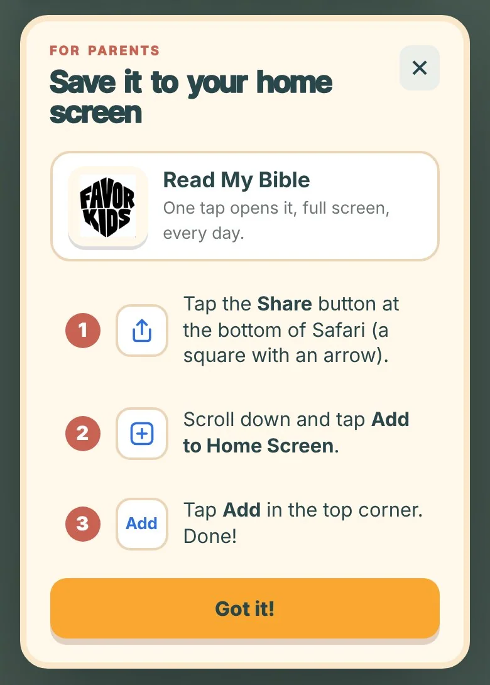
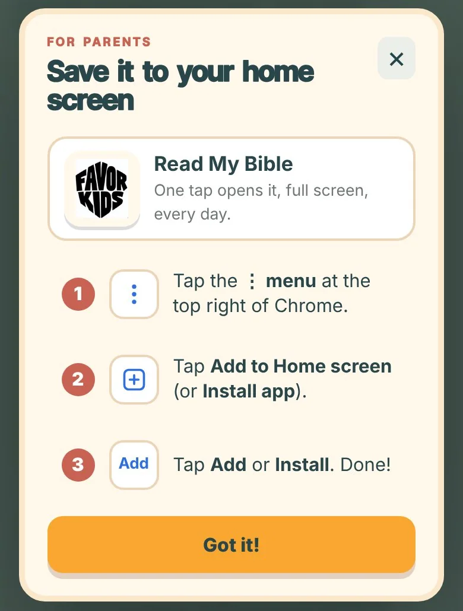
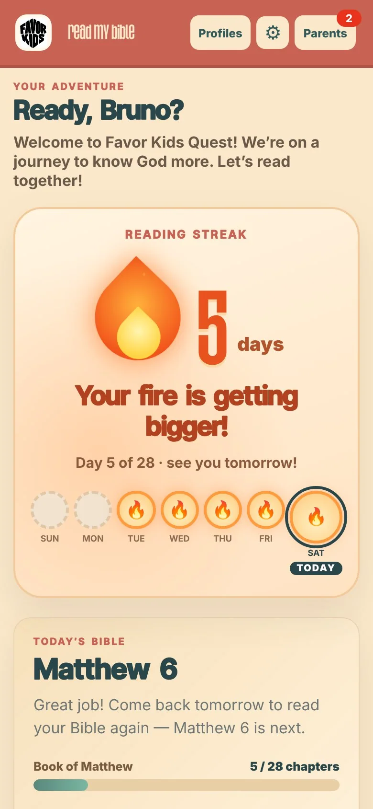
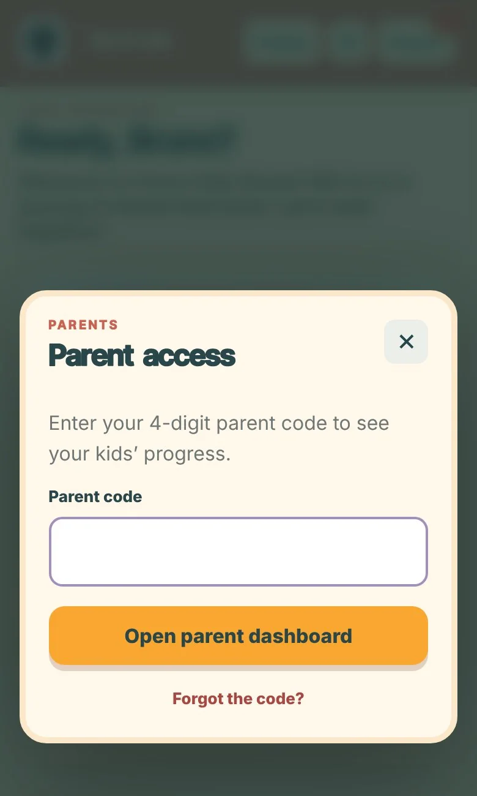

WHAT KIDS DO EACH DAY
Read. Answer. Fly!
READA short passage or the whole chapter.
ANSWER3 quick questions to make sure they understood.
FLYPlay the Sky Run game!



Every day they read, their streak fire grows, they unlock new outfits, and their home grows from a tent to a mansion. They can also send you a voice message or prayer.
GET STARTED
4 easy steps
- 1Enter the site
edbarber-hue.github.io/read-my-bible - 2Tap Start my adventure.
- 3Fill in your child’s details, then the parent section.
- 4Save it to your home screen. A pop-up shows you how!
iPhone: Share › Add to Home Screen › Add
Android: menu › Add to Home screen › Add

STEP 2:
TAP HERE
TAP HERE
4Save it to your home screen


FOR PARENTS
Your Parents portal
1Tap Parents at the top right

TAP
PARENTS
PARENTS
2Make your 4-digit code
First time only. This is just for parents, so keep it secret from your kids, and write it down!

TYPE YOUR
CODE HERE
CODE HERE
3See what your kids answered
Questions to reflect: 2 questions for each chapter to talk about together.
What they said: their answers, prayers, and special little voice messages just for you.

2 TABS
FOR YOU
FOR YOU
Why the questions?To help your kids process what they read, and so you can walk with them as they learn and understand the Bible.
PARTNER WITH YOUR KIDS
Grow together
Ask the questionsAt dinner, in the car, at bedtime.
Go firstShare your answer. They’ll open up.
Listen & prayHear their messages. Pray for who they pray for.
Cheer them onCelebrate every day they read!